← archive films 38 films & television Films that stay with me
You guys have it real easy. I never had it like this where I grew up. But I send my kids here because the fact is you go to one of the best schools in the country: Rushmore. Now, for some of you it doesn't matter. You were born rich and you're going to stay rich. But here's my advice to the rest of you: Take dead aim on the rich boys. Get them in the crosshairs and take them down. Just remember, they can buy anything but they can't buy backbone. Don't let them forget it. Thank you.
Herman Blume, Rushmore
On my mind lately featured · 6 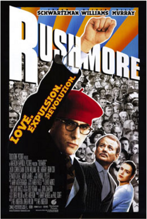
Rushmore Wes Anderson 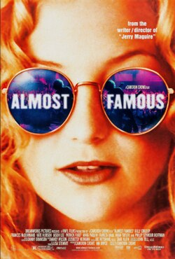
Almost Famous Cameron Crowe 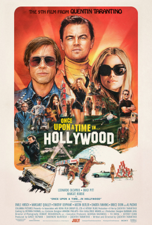
Once Upon a Time... in Hollywood Quentin Tarantino 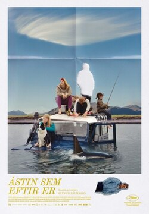
The Love That Remains Hlynur Pálmason 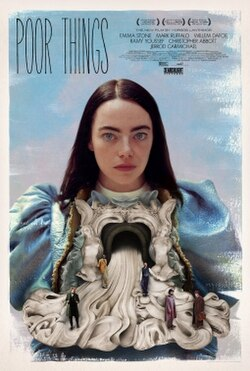
Poor Things Yorgos Lanthimos Léon: The Professional Luc Besson Rushmore Wes Anderson Almost Famous Cameron Crowe Once Upon a Time... in Hollywood Quentin Tarantino The Love That Remains Hlynur Pálmason Poor Things Yorgos Lanthimos Léon: The Professional Luc Besson The collection No matches. Try another title or genre.
Action & adventure 2 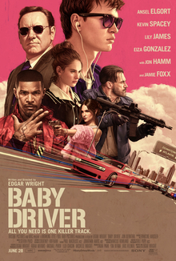
Baby Driver Edgar Wright
2017
Kingsman: The Secret Service Matthew Vaughn
2014
Animation 3 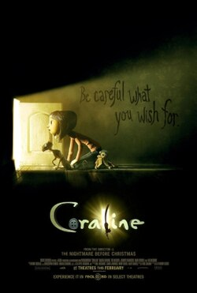
Coraline Henry Selick
2009
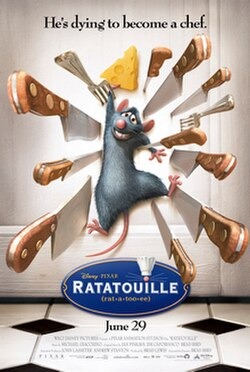
Ratatouille Brad Bird
2007
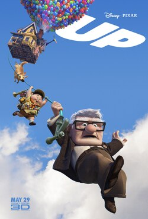
Up Pete Docter
2009
Comedy 7 Borat: Cultural Learnings of America for Make Benefit Glorious Nation of Kazakhstan Larry Charles
2006
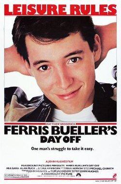
Ferris Bueller's Day Off John Hughes
1986
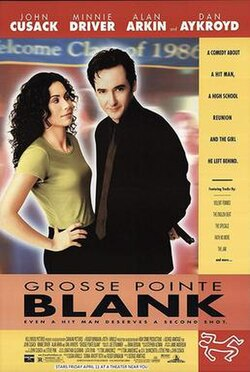
Grosse Pointe Blank George Armitage
1997
Rushmore Wes Anderson
1998
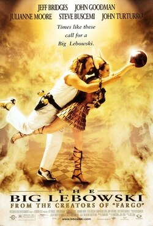
The Big Lebowski Joel Coen [ a ]
1998
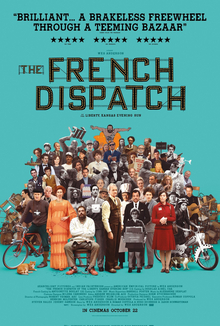
The French Dispatch of the Liberty, Kansas Evening Sun Wes Anderson
2021
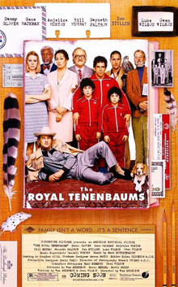
The Royal Tenenbaums Wes Anderson
2001
Crime & thrillers 8 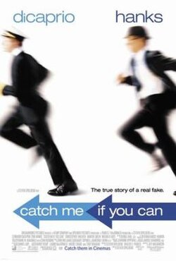
Catch Me If You Can Steven Spielberg
2002
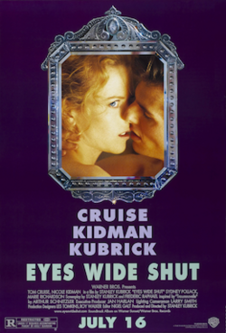
Eyes Wide Shut Stanley Kubrick
1999
Léon: The Professional Luc Besson
1994
Oldboy Park Chan-wook
2003
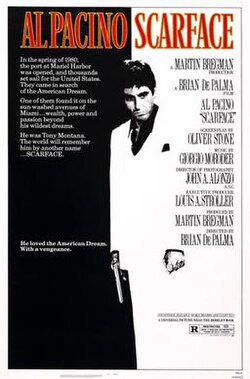
Scarface Brian De Palma
1983
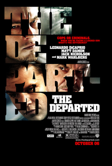
The Departed Martin Scorsese
2006
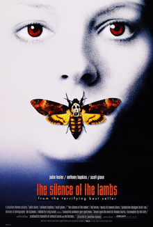
The Silence of the Lambs Jonathan Demme
1991
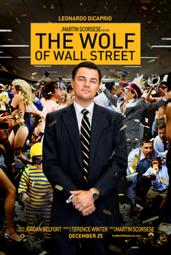
The Wolf of Wall Street Martin Scorsese
2013
Drama 7 Almost Famous Cameron Crowe
2000
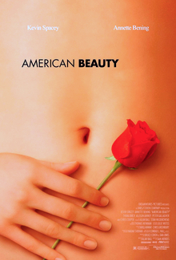
American Beauty Sam Mendes
1999
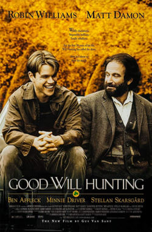
Good Will Hunting Gus Van Sant
1997
Once Upon a Time... in Hollywood Quentin Tarantino
2019
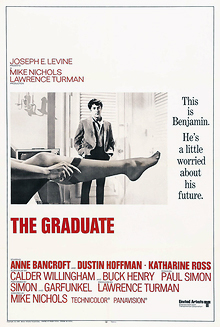
The Graduate Mike Nichols
1967
The Love That Remains Hlynur Pálmason
2025
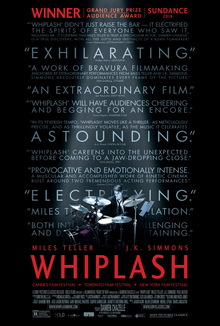
Whiplash Damien Chazelle
2014
Horror 2 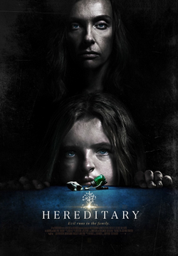
Hereditary Ari Aster
2018
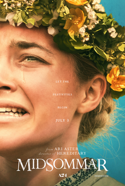
Midsommar Ari Aster
2019
Science fiction & fantasy 6 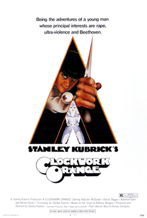
A Clockwork Orange Stanley Kubrick
1971
Arrival Denis Villeneuve
2016
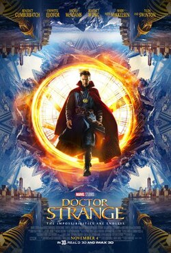
Doctor Strange Scott Derrickson
2016
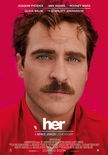
Her Spike Jonze
2013
Poor Things Yorgos Lanthimos
2023
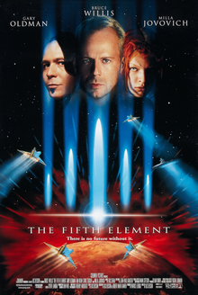
The Fifth Element Luc Besson
1997
Television 1 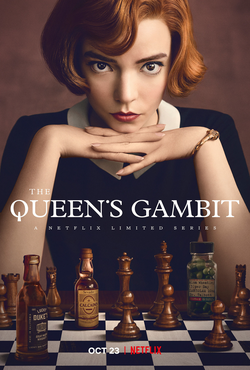
The Queen's Gambit Scott Frank
2020
War & history 1 Inglourious Basterds Quentin Tarantino
2009
Western 1 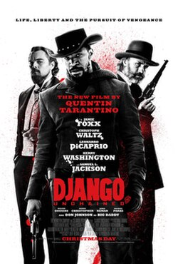
Django Unchained Quentin Tarantino
2012